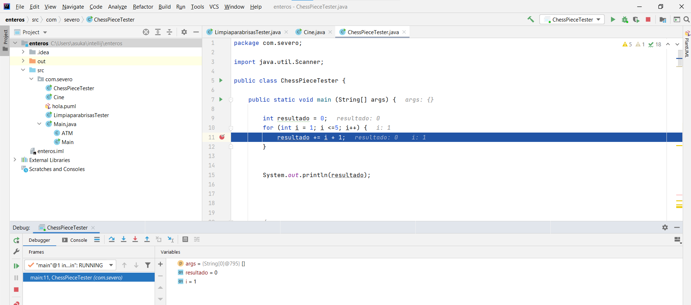
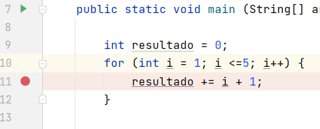
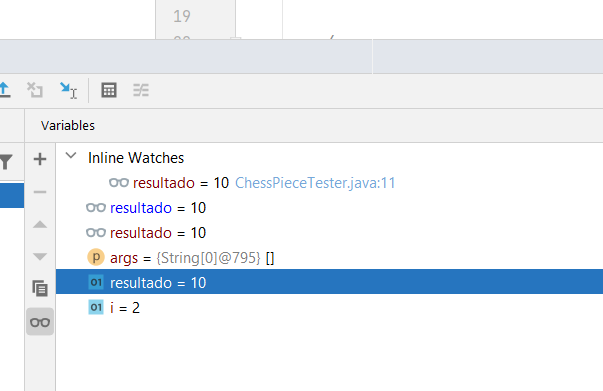

🖲️ Guía de Depuración en IntelliJ IDEA
💡 ¿Qué significa depurar?
Depurar (o debugging) es ejecutar un programa paso a paso para encontrar la causa exacta de un error.
Mientras que las pruebas (testing) verifican los resultados, la depuración te permite ver qué ocurre dentro del código mientras se ejecuta.
🔍 En resumen:
- Sirve para encontrar errores de lógica, no solo de sintaxis.
- Te deja ver los valores de las variables y el flujo del programa.
- Se hace con herramientas llamadas depuradores (debuggers).
🧩 Elementos básicos del depurador
| Elemento | Qué hace |
|---|---|
| Breakpoint (punto de interrupción) | Marca dónde se detiene el programa. |
Step Over (F8) |
Avanza a la siguiente línea sin entrar en métodos. |
Step Into (F7) |
Entra dentro del método que se está llamando. |
Step Out (Shift+F8) |
Sale del método actual. |
Resume (F9) |
Reanuda la ejecución hasta el siguiente breakpoint. |
| Evaluate / Watch | Permite ver y evaluar expresiones o variables. |
| Call Stack | Muestra qué métodos se han llamado unos a otros. |
⌨️ Atajos útiles
| Acción | Windows / Linux | macOS |
|---|---|---|
| Alternar breakpoint | Ctrl + F8 | ⌘ + F8 |
| Ver todos los breakpoints | Ctrl + Shift + F8 | ⌘ ⇧ F8 |
| Debug (iniciar) | Shift + Alt + F9 | ⌘ D (según keymap) |
| Step Over | F8 | F8 |
| Step Into | F7 | F7 |
| Resume | F9 | F9 |
⚙️ Cómo empezar a depurar en IntelliJ IDEA
- Abre tu clase principal (la que tiene el
main). - Coloca un breakpoint en el margen izquierdo de la línea que quieras analizar.
- Atajo:
Ctrl + F8(Windows/Linux). - Haz clic en el icono del 🪲 o elige Run → Debug.
- Cuando el programa se detenga, verás:
- Variables locales.
- Pila de llamadas (Call Stack).
- Botones para avanzar (Step Into, Step Over, etc.).
🐞 Ejecutar Debug

Run --> Debug
🐞 Breakpoint / Punto de ruptura

-
Permite detener un programa en una línea/parte determinada.
1) Click sobre el número de línea o CTRL + F8
-
Una vez se detiene el programa podemos:
1) Analizar el valor de cualquier variable/propiedad
2) Analizar el valor de una expresión.
3) Ejecutar línea a línea y comprobar el flujo de la aplicación.
-
Tras realizar la comprobación, se puede:
1) Detener el programa.
2) O continuar su ejecución hasta el final.
🎯 Ejemplo sencillo
public class DepuracionIntro {
public static void main(String[] args) {
int x = 5;
int y = leerEnteroSeguro("7"); // prueba a pasar "siete"
int z = suma(x, y);
System.out.println("Resultado: " + z);
}
static int leerEnteroSeguro(String s) {
try {
return Integer.parseInt(s);
} catch (NumberFormatException e) {
return 0;
}
}
static int suma(int a, int b) {
int r = a + b;
if (r > 10) r = r - 1; // bug intencionado
return r;
}
}
👁️🗨️ Pasos guiados:
- Coloca un breakpoint en la línea de
int z = suma(x, y); - Inicia el modo depuración.
- Usa
F7para entrar en el métodosuma. - Observa cómo cambian los valores de las variables.
- Comprueba por qué el resultado no es el esperado.
🧠 Tipos de breakpoints
- 🔴 Normal: detiene la ejecución en esa línea.
- 🟡 Condicional: solo se activa si se cumple una condición (ej:
i > 10). - 🟢 De excepción: se activa cuando se lanza una excepción (por ejemplo
NullPointerException). - 🟣 Logpoint: no detiene, solo imprime un mensaje con el valor de una variable.
💬 Ejemplo de breakpoint condicional:
acumulado > 50 && nombre.equals("admin")
🔴 Breakpoint normal (línea)
🪄 Cómo se crea:
- Haz clic en el margen izquierdo de la línea → aparece un punto rojo.
- O usa el atajo: Ctrl + F8 (Windows/Linux) · ⌘ + F8 (macOS).
⚙️ Opciones disponibles (clic derecho sobre el punto):
- ✅ Enabled: activar o desactivar sin eliminarlo.
- ⏸️ Suspend: elige si se detiene todo el programa (All) o solo el hilo actual (Thread).
- 🔢 Hit count: haz que solo se active a partir de la n-ésima vez que pasa por esa línea.
📍 Uso típico: detener el programa justo antes de una línea que sospechas que tiene un error.
🟡 Breakpoint condicional
🪄 Cómo se crea:
1. Coloca un breakpoint normal.
2. Haz clic derecho sobre él → en el campo Condition escribe una expresión Java que devuelva true o false.
🧮 Ejemplos de condición:
i > 10
contador == 5
usuario.equals("admin") && intentos > 3
💡 Truco: puedes combinar con Hit count (ej. “activa solo cuando i > 10 y sea la 3ª vez que pasa”).
📍 Uso típico: detenerte solo cuando ocurre algo específico, sin parar en cada iteración.
🟢 Breakpoint de excepción
🪄 Cómo se crea:
1. Abre Run → View Breakpoints…
o usa el atajo Ctrl + Shift + F8 / ⌘ ⇧ F8.
2. Pulsa + → Java Exception Breakpoint.
3. Escribe el tipo de excepción (ejemplo: NullPointerException).
⚙️ Opciones útiles:
- Caught / Uncaught: elige si parar también en excepciones capturadas (try-catch) o solo en las no capturadas.
- Condition: para filtrar casos (por ejemplo: obj == null).
- Class filters: limitar a una clase o paquete específico.
📍 Uso típico: detectar exactamente dónde se lanza una excepción, incluso dentro de librerías.
🟣 Logpoint (sin detener el programa)
🪄 Cómo se crea:
1. Coloca un breakpoint normal.
2. Haz clic derecho sobre el punto.
3. Desmarca la casilla Suspend (para que no se detenga).
4. Marca Log message to console y escribe tu mensaje personalizado.
✍️ Ejemplo de mensaje:
i={i}, acumulado={acumulado}
💡 Puedes incluir expresiones entre llaves {} para mostrar valores en tiempo real.
📍 Uso típico: imprimir trazas o valores de variables sin usar System.out.println() ni detener la ejecución.
🧩 Breakpoints avanzados
⚙️ Dependientes entre sí
- En View Breakpoints… puedes hacer que un breakpoint B solo se active si antes saltó el A.
👉 Usa la opción “Disable until breakpoint is hit”.
⚙️ De método o campo
- En View Breakpoints… → + puedes añadir:
- Method Breakpoint: se activa al entrar o salir de un método.
- Field Breakpoint: se activa cuando cambia el valor de un atributo.
⚠️ Son más pesados: úsalos solo para casos puntuales.
⚙️ Mute Breakpoints
- En la barra de depuración hay un icono de 🔇 para silenciar todos los breakpoints temporalmente sin borrarlos.
🧪 Experimenta con estos pasos
🧩 A. Detección de excepciones
- Pasa
"siete"como argumento aleerEnteroSeguro. - Crea un breakpoint de excepción para
NumberFormatException. - Observa dónde se lanza y dónde se captura la excepción.
⚙️ B. Localiza el fallo lógico
- Ejecuta el programa con
x=5yy=7. - Depura paso a paso y analiza por qué devuelve
11en lugar de12. - Corrige el error en el método
suma.
🕵️♂️ C. Usa breakpoints condicionales
- Crea un bucle que sume del 1 al 20.
- Detén el programa solo cuando
acumulado > 50. - Usa la condición en el breakpoint y verifica el comportamiento.
🧭 Pila de llamadas y variables
Durante la depuración podrás ver:
- Variables locales y sus valores.
- Expresiones observadas (Watch).
- Evaluaciones rápidas (Alt+F8).
- Call Stack: la secuencia exacta de métodos llamados.
Esto te permite entender quién llama a quién y en qué orden se ejecuta el código.
🔥 HotSwap: cambiar código sin reiniciar
IntelliJ permite modificar ligeramente el código durante una sesión de depuración.
Puedes cambiar el contenido de un método y aplicar los cambios con Ctrl + F9.
⚠️ Si cambias estructuras grandes (clases, firmas de métodos…), tendrás que reiniciar.

🧭 Flujo recomendado al depurar
- Reproduce el error con los mismos datos.
- Coloca breakpoints cerca del problema.
- Observa los valores de las variables.
- Usa Step Over / Step Into para entender el flujo.
- Ajusta condiciones y vuelve a probar.
- Una vez localizado el fallo, corrígelo y verifica que desaparece.